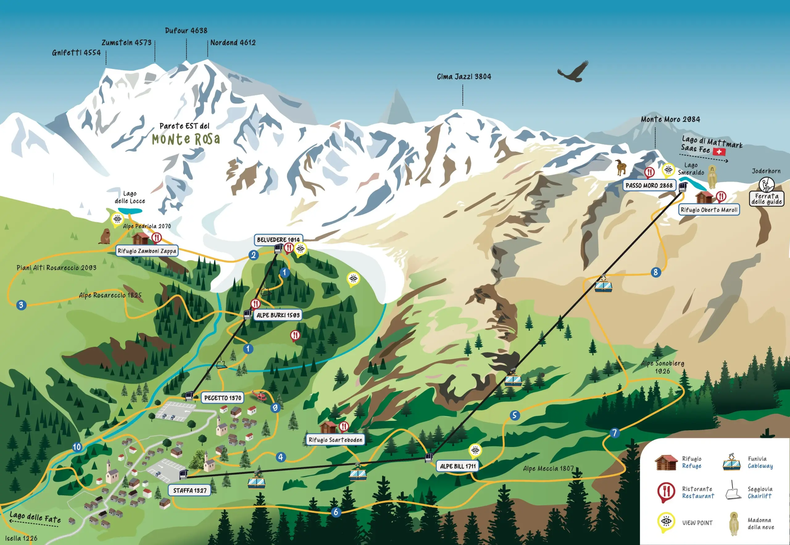

Belvedere und Alpe Burki
Blick auf die Ostwand, Stille und Weiden. An der Alpe Burki Hütten und Rifugi mit alpiner Küche: perfekte Basis für einen halben Tag in niederer–mittlerer Höhe.

Sessellift zum Belvedere und Seilbahn zu Alpe Bill und Passo Moro: Anlagen, die näher an die Ostwand des Monte Rosa bringen. Offizielle Öffnungszeiten prüfen und den Aufenthalt mit Erlebnissen aus dem Buchungsportal bereichern.
Zwei Bereiche
In Macugnaga verbinden die Aufstiegsanlagen den Talboden mit zwei getrennten Bereichen.
Auf der Belvedere-Seite führen Sessellifte von Pecetto nach Alpe Burki (Zwischenstation, ca. 1593 m) und zum Belvedere (ca. 1914 m): ein natürlicher Balkon auf die „himalayische Wand“ des Monte Rosa.
Auf der Monte-Moro-Seite verbinden Seilbahnen Staffa mit Alpe Bill und, mit dem zweiten Abschnitt, dem Passo Moro (ca. 2870 m), einem der bekanntesten Panoramapässe im Anzasca-Tal.
Quelle und Aktualisierungen: macugnagamonterosaski.com · destinazione macugnaga-monterosa.it
Karte

Online buchen
Buchen Sie Online-Tickets für die täglich geöffneten Sommeranlagen (Zahlung vor Ort). Belvedere-Sessellift ab 17 € · Alpe-Bill-Seilbahn ab 12 €.
In der Höhe
Wenn die Abschnitte in Betrieb sind, öffnen Sessellift oder Seilbahn Panoramen, Almen und Wege, ohne den Höhenunterschied sofort zu Fuß zu nehmen — ideal für Familien, Wochenenden und ruhiges Bergtempo.
Blick auf die Ostwand, Stille und Weiden. An der Alpe Burki Hütten und Rifugi mit alpiner Küche: perfekte Basis für einen halben Tag in niederer–mittlerer Höhe.

Vom Belvedere können Sie zu Fuß weiter zum Rifugio Zamboni-Zappa, Routen am Belvedere-Gletscher und zum Lago delle Locce — Wege unterschiedlicher Schwierigkeit; wählen Sie nach Kondition und Bedingungen.

Die Seilbahn bringt Sie nach Alpe Bill und, wenn der zweite Abschnitt offen ist, zum Passo Moro: 360°-Blick auf die Alpen und Richtung Schweiz, mit der Madonna della Neve nahe der Bergstation.

Sommer und Winter
Im Sommer erleichtern die Anlagen — in den von der Gesellschaft veröffentlichten Betriebszeiten — Trekking, Mountainbike und Panoramatage zwischen Wiesen, Wäldern und Höhe.
Im Winter sind Belvedere und Monte Moro das Herz von Ski und Snowboard in Macugnaga, mit Pisten und Verbindungen auf dem offiziellen Plan.
Einzelne Anlagen oder Abschnitte können wegen Wartung, Wetter oder Technik geschlossen sein: verlassen Sie sich nicht auf Hörensagen — prüfen Sie den Live-Status vor der Tagesplanung.
Praktische Infos
Öffnungskalender Sommer 2026 (offizielle Quelle): die Sessellifte Pecetto–Alpe Burki–Belvedere sind bis Sonntag, 20. September, und am Wochenende 26.–27. September geöffnet. Zeiten: Juli werktags 9:00–17:00 / Wochenende 8:30–17:00; August täglich 8:30–17:00; September werktags 9:00–17:00 / Wochenende 8:30–17:00 (letzte Abfahrt vom Belvedere 17:00, letzte Auffahrt von Pecetto 16:30; Montag, 31. August 9:00–17:00). Die Seilbahn Macugnaga–Alpe Bill ist bis Sonntag, 20. September, geöffnet — bis 6. September täglich 8:30–12:15 / 13:30–16:45; ab 7. September Wochenende gleiche Zeiten, werktags Fahrten um 8:30 / 10:30 / 15:00 / 16:30. Der zweite Abschnitt Alpe Bill–Passo Moro ist geschlossen. Angaben können sich ändern: prüfen Sie Zeiten und Live-Status vor der Abreise.
Buchungsportal
Buchen Sie online Tickets für den Belvedere-Sessellift und die Alpe-Bill-Seilbahn — oder ergänzen Sie den Tag mit Wanderungen, Wellness, Walser-Haus und Goldmine.
FAQ
Sessellifte am Belvedere (Pecetto–Burki–Belvedere) und Seilbahnen am Monte Moro (Staffa–Alpe Bill–Passo Moro).
Monte-Rosa-Panoramen, Halt an Almen (Burki, Bill), Spaziergänge zu Rifugi und Belvedere-Gletscher; am Passo Moro (wenn über den zweiten Abschnitt erreichbar) 360°-Blick und Madonna della Neve.
Nur von der offiziellen Website: macugnagamonterosaski.com/impianti. Zeiten und Status einzelner Abschnitte können sich auch in der Saison ändern.
Ja: Sie können online den Sessellift Pecetto–Burki–Belvedere und die Seilbahn Staffa–Alpe Bill buchen (Zahlung vor Ort). Für Skipässe und Öffnungszeiten auch die offizielle Anlagen-Website prüfen.
Eine Fahrt in die Höhe (wenn Anlagen in Betrieb sind) passt zu Walser-Haus, Goldmine und Outdoor-Aktivitäten. Ideen auf Wochenende und Buchungen auf Erlebnisse.
Panorama- und Almbilder: Material veröffentlicht auf macugnagamonterosaski.com (Macugnaga Transportation and Services). Credits auch in Credits.